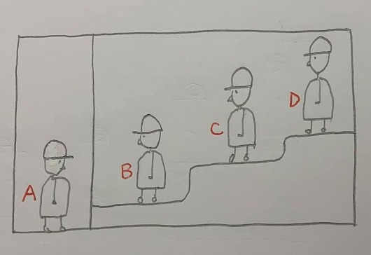

訓練孩子邏輯推理的帽子問題
前陣子我在直播中示範的「賽局與操作」課程獲得很大的迴響，其中一道猜帽子顏色的問題，很受家長與同學喜愛。
獵豹團隊的阿哲老師特別再提供一道有趣的猜帽子顏色的問題（取自日本私立小學入學試題），歡迎家長帶著孩子們一起嘗試做做看！
【問題】
4個非常聰明的小朋友A、B、C、D站在房間裡（如圖）。
A與B、C、D之間有一道牆壁 隔開兩邊。
1.
他們都知道彼此的位置。
2.
他們只知道：
其中2個人戴黑帽子,另2個人戴白帽子；
但都看不到、也不知道自己戴什麼顏色的帽子。
3.
C、D可看得到他們前面所有人的帽子。
4.
每個人都不能取下自己的帽子。
5.
B、C不得轉頭看後面；彼此不能交談，也不能移動位置。
現在，外面的老師大聲宣布：
如果有人知道自己帽子的顏色，請立刻大聲回答。
老師語畢，大家沈默了一會兒，有一人舉手正確地說出了自己帽子的顏色。
接著第二個人也舉手說出了自己帽子正確的顏色。
請問第二個答對的會是誰？
————————————————

許多著名的科學家常常喜歡設計一些有趣的題目，來考考別人的機敏和邏輯推理能力。
聽說偉大的物理學家愛因斯坦就曾經出過這樣一道題：
有一個土耳其商人，想找一個助手協助他經商。但是，他要的這個助手必須十分聰明才行。
消息傳出的三天后，有A、B兩個人前來聯繫。這個商人為了試一試A、B兩個人中哪一個聰明一些，就把他們帶進一間伸手不見五指的漆黑的房子裡。
商人打開電燈說：「這張桌子上有五頂帽子，兩頂是紅色的，三頂是黑色的。現在，我把燈關掉，並把帽子擺的位置搞亂，然後，我們三人每人摸一頂帽子戴在頭上。當我把燈開亮時，請你們盡快地說出自己頭上戴的帽子是什麼顏色的。」
說完之後，商人就把電燈關掉了，然後，三個人都摸了一頂帽子戴在頭上；同時，商人把餘下的兩頂帽子藏了起來。
待這一切做完之後，商人把電燈重新開亮。這時候，那兩個人看到商人頭上戴的是一頂紅色的帽子。
過了一會兒，A喊道：「我戴的是黑帽子。」
請問A是如何推理的?
——————————
中國已故著名的數學大師--華羅庚，在為中學生寫的一本科普書中將這「土耳其商人與帽子」的問題改寫成邏輯推理更強的版本：
有位老師，想辨別他的3個非常聰明的學生誰最聰明。
他採用如下的方法：事先準備好3頂白帽子，2頂黑帽子，讓他們看到，然後叫他們閉上眼睛，分別給戴上帽子，藏起剩下的2頂帽子，最後叫他們睜開眼，看著別人的帽子，盡快說出自己所戴帽子的顏色。
3個學生互相看了看，都躊躇了一會，然後都異口同聲地說出自己戴的是白帽子。
請問他們是如何推理的？
https://www.facebook.com/groups/695697124716309/permalink/730394074579947/
專家模式
受過專家模式的「極端值分析」訓練的孩子，會將注意力放在一開始這四個人中「資訊量最多」的D，為何他會沈默？！
嗯 這是震耳欲聾的沈默！！
這沈默 傳遞了重要訊息—他看見了什麼？
不可能是兩白！
不可能是兩黑！
C：我知道了 我是黑（如果B是白）
B:我知道了...
https://www.facebook.com/groups/695697124716309/permalink/730530291232992/